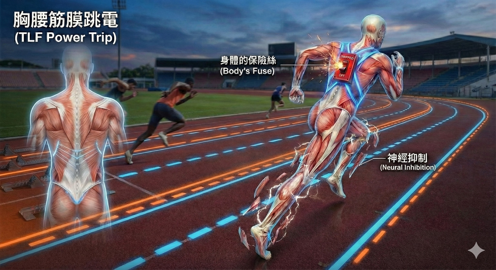

跑到一半突然「軟腳」？不是沒力，是你的筋膜總開關「跳電」了！
【 跑到一半突然「軟腳」？不是沒力，是你的筋膜總開關「跳電」了！ 】
這是一個許多高階跑者與健身愛好者常遇到的詭異現象。
即便是具備專業肌力背景的運動員，在拉高跑步訓練強度時也常遇到這樣的狀況：
「醫師，有次間歇跑最後一趟，突然覺得腰臀一陣緊繃，接著雙腿像斷電一樣抬不起來，差點跪在地上。不但瞬間軟腳，雖然沒有明顯受傷，但日後開始感覺兩隻腿還變得超緊，一下內側緊、一下外側緊，也找不到一個固定的兇手，是不是傷到神經了？」
相信不少對自我要求高的朋友，也曾面臨這種「有力卻使不出」的挫折。
這往往不是你的肌肉沒力，而是人體後背最關鍵的「神經總開關」—— 胸腰筋膜 (Thoracolumbar Fascia, TLF) 為了保護你，強制啟動了「跳電程序」。
💡 胸腰筋膜：人體後背的「智能傳動軸」
很多跑者只專注於練腿、練核心，卻忽略了背後這片白色的強韌組織。
在解剖學與生物力學上，胸腰筋膜絕不只是一層包膜。根據 Vleeming 的「後斜向動力鏈 (Posterior Oblique Sling)」理論，它是力量的轉運站。
請想像背部有一條 「X 型的傳動皮帶」。跑步擺手時，力量必須從「右邊背闊肌」，穿過中間的「胸腰筋膜」，精準傳遞到「左邊臀大肌」。高手跑步之所以流暢，是因為他們的傳動軸運作完美。
⚠️ 為什麼會斷電？揭開「神經抑制」的真相
當你感受到身體到達極限（臨界值），卻憑意志力硬衝時，會發生什麼事？
筋膜權威 Dr. Robert Schleip 證實，胸腰筋膜佈滿了感覺受器，它是人體的「第二個大腦」。
當胸腰筋膜(TLF)偵測到張力飆高、快超過脊椎負荷時，為了避免重傷，它會向大腦發送紅色警報。大腦接收後會立刻下令：「切斷給臀腿的電源！」
這在醫學上稱為 「神經抑制 (Neural Inhibition)」。
那種突發性的「軟腳」，其實是身體最高級的保險絲機制（Reflexive Inhibition，反射性抑制）。它寧可讓你停下來，也不願讓你斷掉。
🔄 災後現場：為什麼痛點會「捉迷藏」？
這解釋了為什麼緊繃感會「跑來跑去」。
當總開關（胸腰筋膜）跳電，主動力鏈斷裂，身體為了運作只好啟動「代償輪盤 (Compensation Roulette)」：
- 原本該臀大肌做的事，內收肌出來扛（大腿內側緊）。
- 內收肌累了，換髂脛束出來頂（大腿外側緊）。
- 最後連小腿比目魚肌都被抓來加班（膕窩與小腿超緊）。
這就是典型的「系統性失靈」。源頭的傳動軸壞了，周邊零件只好輪流過勞。
🚫 這時候「硬練」或「暴力拉筋」是大忌
很多強壯的運動員，直覺反應是「更用力的拉筋」或「用滾筒痛點按壓」。
請修但幾咧！
此時筋膜處於「驚嚇發炎」狀態，暴力的伸展只會刺激交感神經，讓大腦判定「危險還沒解除」，反而縮得更緊。
🛠 修復策略：系統重置 (System Reset)
在中西醫整合的治療思維裡，面對這種「軟體當機」，我們不追著痛點跑，而是執行兩步驟重開機：
1. 針灸/乾針解鎖（恢復供電）：
精準針刺重點穴位與肌筋膜，直接調節張力受器，向大腦傳遞「危機解除」訊號，解除神經抑制。
2. 筋膜液化（重啟傳動）：
健康的筋膜需要水分滑動。透過徒手治療，將沾黏脫水的胸腰筋膜層層滑開，恢復層與層之間的關鍵滑動性，讓「傳動軸」再次運轉。
👨⚕️ 醫師的小建議
面對「神經訊號卡關」與「筋膜傳導受阻」：
1. 尊重臨界值：再完美的課表，都比不上身體的回饋。感覺到「異常且深層的背部緊繃」時，請果斷降速。與其練到滿身內傷，不如放慢腳步穩定成長。
2. 別追著痛點跑：游走性的緊繃代表是系統問題。與其一直按摩大腿，不如放鬆你的下背與核心。
別讓你的傳動軸卡死。保持胸腰筋膜的彈性，你的力量才能真正轉換成速度。
#胸腰筋膜 #TLF #跑步 #軟腳 #神經抑制 #代償 #中醫針傷 #運動醫學 #後斜向動力鏈
太初中醫診所 東門中醫
中醫師 黃彥鈞
---
參考文獻 (References)：
1. Vleeming A, et al. (1995). The posterior layer of the thoracolumbar fascia. Spine. 提出後斜向動力鏈概念，證實筋膜在背部與臀部力量傳遞的關鍵角色。
2. Schleip R, et al. (2019). Fascia is able to contract in a smooth muscle-like manner. Journal of Biomechanics.
3. Willard FH, et al. (2012). The thoracolumbar fascia: anatomy, function and clinical considerations. Journal of Anatomy. 詳盡解析胸腰筋膜的神經解剖構造，證實其富含感覺受器。(Journal of Anatomy)
4. Schleip, R. (2003). Fascial plasticity – a new neurobiological explanation. Journal of Bodywork and Movement Therapies.
5. Solomonow M. (2009). 探討韌帶與軟組織在過度負荷下的神經反射與肌肉抑制現象。(Journal of Bodywork and Movement Therapies)
本文內容僅供健康衛教參考，若有持續性的身體不適，請務必尋求專業醫療人員評估與治療。
